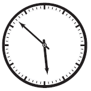

Questões de competição¶
Os problemas deste grupo são transcrições ou adaptações de problemas integrantes de competições de programação. Você pode encontrar vários outros exercícios como esses no BeCrowd, Hacker Rank, CodeChef, Topcoder ou Online Judge.
Outra excelente oportunidade de praticar e verificar seu conhecimento de programação é participar do InterIF, a Maratona de Programação do IFSP.
O que é o InterIF?
O InterIF é uma ação que visa contribuir com a aprendizagem por meio de uma competição de programação de computadores destinada aos estudantes regularmente matriculados nos cursos do Instituto Federal de São Paulo, realizada anualmente em duas etapas. Durante a competição, as equipes formadas por três estudantes trabalham em conjunto usando um único computador para resolver o maior número possível de problemas, utilizando suas habilidades em programação, análise de algoritmos e raciocínio lógico, dentro do tempo limite da prova. Cada equipe é, normalmente, preparada por um professor de seu respectivo campus, chamado de coach da equipe. Vence a equipe que resolver o maior número de questões, tendo como critérios de desempate o tempo de resolução e número de submissões incorretas.
-
(URI 1437) Este ano o sargento está tendo mais trabalho do que de costume para treinar os recrutas. Um deles é muito atrapalhado, e de vez em quando faz tudo errado – por exemplo, ao invés de virar à direita quando comandado, vira à esquerda, causando grande confusão no batalhão. O sargento tem fama de durão e não vai deixar o recruta em paz enquanto este não aprender a executar corretamente os comandos. No sábado à tarde, enquanto todos os outros recrutas estão de folga, ele obrigou o recruta a fazer um treinamento extra. Com o recruta marchando parado no mesmo lugar, o sargento emitiu uma série de comandos "Esquerda, Volver!" e "Direita, Volver!". A cada comando, o recruta deve girar sobre o mesmo ponto e dar um quarto de volta na direção correspondente ao comando. Por exemplo, se o recruta está inicialmente com o rosto voltado para a direção norte, após um comando de "esquerda volver!" ele deve ficar com o rosto voltado para a direção oeste. Se o recruta está inicialmente com o rosto voltado para o leste, após um comando "Direita, volver!" ele deve ter o rosto voltado para o sul. No entanto, durante o treinamento, em que o recruta tinha inicialmente o rosto voltado para o norte, o sargento emitiu uma série tão extensa de comandos, e tão rapidamente, que até ele ficou confuso, e não sabe mais para qual direção o recruta deve ter seu rosto voltado após executar todos os comandos. Você pode ajudar o sargento? Construa um programa que leia o número N de comandos emitidos pelo sargento, cada um dos N comandos (0 indica esquerda, e 1 indica direita) e, depois, diga para qual lado o recruta está virado (começa olhando para norte, e pode terminar olhando para norte, leste, sul ou oeste)
-
(URI 1397) Og gosta muito de brincar com seus filhos. Seu jogo preferido é o jogo do maior, de autoria própria. Este passatempo (no tempo das cavernas se tinha muito tempo disponível para jogos) é jogado em dupla, Og e um dos seus filhos. O jogo procede da seguinte forma: os dois participantes escolhem um número de rodadas e, a cada rodada, cada participante diz um número de 0 até 10 em voz alta, sendo que o participante que falar o número mais alto ganha um ponto (em caso de empate, ninguém ganha o ponto). No final das rodadas, os pontos são contabilizados e o participante com o maior número de pontos ganha. Og e seus filhos gostam muito do jogo, mas se perdem na contagem dos pontos. Você conseguirá ajudar Og a verificar a pontuação de uma lista de jogos? Construa um programa que leia um inteiro N indicando número de rodadas da partida, e depois leia N pares de valores, sendo que o primeiro inteiro é o valor do jogador A, e o segundo, do jogador B e diga quantas rodadas cada jogador ganhou (valor iguais são considerados empate, sem vencedores)
-
(URI 1379) A média de três inteiros \(A\), \(B\) e \(C\) é \((A + B + C)/3\). A mediana de três números inteiros seria então aquela que estaria no meio, se forem ordenados em ordem não decrescente. Dados dois números inteiros \(A\) e \(B\), retornar o mínimo inteiro possível \(C\), tal que a média e a mediana de \(A\), \(B\) e \(C\), sejam iguais. Faça um programa que leia dois inteiros, \(A\) e \(B\) e imprima o menor inteiro \(C\) de forma que a média e a mediana entre \(A\), \(B\) e \(C\) sejam iguais
-
(URI 1329) João e Maria são amigos desde que se conheceram na creche. Desde então, eles compartilham uma rotina de brincadeiras: todas as vezes que eles se encontram, eles jogam Cara ou Coroa com uma moeda, e quem ganhar tem o privilégio de decidir quais brincadeiras eles irão jogar durante o dia. Maria sempre escolhe cara, e João sempre escolhe coroa. Hoje em dia eles estão na faculdade, mas continuam sendo bons amigos. Sempre que se encontram, eles ainda jogam Cara ou Coroa, e o vencedor decide que filme assistir, ou em que restaurante jantar, e assim por diante. Ontem Maria contou a João que ela guarda um registro de todas as vezes que eles jogaram, desde os tempos da creche. João ficou espantado. Porém João está estudando Ciência da Computação e decidiu que essa era uma boa oportunidade para mostrar a Maria suas habilidades em programação, escrevendo um programa que mostrasse o número de vezes que cada um deles venceu ao longo de todos esses anos. Construa um programa que leia um inteiro N que indica o número de partidas jogadas, e depois N inteiros que indicam se Maria (0) ou João (1) ganhou a partida. Por fim, o programa deve dizer quantas partidas João ganhou, e quantas partidas Maria ganhou.
-
(URI 1300) Heidi tem um relógio analógico discreto com a forma de um círculo, como o mostrado na figura ao lado. Dois ponteiros giram em torno do centro do círculo, indicando as horas e minutos. O relógio tem 60 marcas colocadas em torno do seu perímetro, com a distância entre cada uma das marcas consecutivas sendo constante. O ponteiro dos minutos se move de sua marca atual para o próximo exatamente uma vez a cada minuto. Por sua vez, o ponteiro das horas se move de sua marca atual para a próxima exatamente uma vez a cada 12 minutos, de modo que avança cinco marcas a cada hora. Consideramos que os dois ponteiros movem-se discretamente e instantaneamente, o que significa que eles estão sempre posicionados exatamente sobre uma das marcas e nunca entre as marcas. À meia-noite ambos os ponteiros alcançam ao mesmo tempo a marca no topo, o que indica zero horas e zero minutos. Após exatamente 12 horas ou 720 minutos, ambos os ponteiros alcançam a mesma posição novamente, e este processo é repetido várias vezes. Note que quando o ponteiro dos minutos se move, o ponteiro das horas pode não se mover, no entanto, quando o ponteiro das horas se move, o ponteiro dos minutos também se move. Heidi gosta de geometria, e ela gosta de medir o ângulo mínimo entre os dois ponteiros do relógio em diferentes momentos do dia. Ela tem anotado algumas medidas, mas depois de vários anos e uma longa lista, ela notou que alguns ângulos se repetiam enquanto alguns outros nunca apareciam. Por exemplo, a lista de Heidi indica que tanto às três horas quanto às nove horas o ângulo mínimo entre os dois ponteiros é de 90 graus, enquanto um ângulo de 65 graus não aparece na lista. Heidi decidiu verificar, para qualquer número inteiro \(\alpha\) entre 0 e 180, se existe pelo menos uma vez no dia um ângulo mínimo entre os dois ponteiros do relógio com exatamente \(\alpha\) graus. Construa um programa que leia um inteiro \(\alpha\) e indique se existe pelo menos uma hora no dia na qual o ângulo mínimo entre os ponteiros é exatamente igual ao ângulo \(\alpha\) informado.
-
(URI 1483) Em um país muito distante, as pessoas são viciadas em um jogo de apostas bastante simples. O jogo é baseado em números e é chamado jogo do bicho. O nome do jogo deriva do fato que os números são divididos em 25 grupos, dependendo do valor dos dois últimos dígitos (dezenas e unidades), e cada grupo recebe o nome de um animal. Cada grupo é associado a um animal da seguinte forma: o primeiro grupo (burro) consiste nos números 01, 02, 03 e 04; o segundo grupo (águia) é composto dos números 05, 06, 07 e 08; e assim em diante, até o último grupo contendo os números 97, 98, 99 e 00. As regras do jogo são simples. No momento da aposta, o jogador decide o valor da aposta \(V\) e um número \(N\) (\(0 \leq N \leq 99999\)). Todos os dias, na praça principal da cidade, um número \(M\) é sorteado (\(0 \leq M \leq 99999\)). O prêmio de cada apostador é calculado da seguinte forma:
- Se \(M\) e \(N\) têm os mesmos quatro últimos dígitos (milhar, centena, dezena e unidade), o apostador recebe \(V \timews 3000\) (por exemplo, \(N = 99301\) e \(M = 19301\));
- Se \(M\) e \(N\) têm os mesmos três últimos dígitos (centena, dezena e unidade), o apostador recebe \(V \times 500\) (por exemplo, \(N = 38944\) e \(M = 83944\));
- Se \(M\) e \(N\) têm os mesmos dois últimos dígitos (dezena e unidades), o apostador recebe \(V \times 50\) (por exemplo, \(N = 111\) e \(M = 55211\));
- Se \(M\) e \(N\) têm os dois últimos dígitos no mesmo grupo, correspondendo ao mesmo animal, o apostador recebe \(V \times 16\) (por exemplo, \(N = 82197\) e \(M = 37600\));
- Se nenhum dos casos acima ocorrer, o apostador não recebe nada.
Obviamente, o prêmio dado a cada apostador é o máximo possível de acordo com as regras acima. No entanto, não é possível acumular prêmios, de forma que apenas um dos critérios acima deve ser aplicado no cálculo do prêmio. Se um número \(N\) ou \(M\) com menos de quatro dígitos for apostado ou sorteado, assuma que dígitos 0 devem ser adicionados na frente do número para que se torne de quatro dígitos; por exemplo, 17 corresponde a 0017. Construa um programa que leia o valor apostado, o número escolhido e o número sorteado, e diga qual o valor do prêmio devido ao apostador.
-
(URI 1573) Uma fábrica produz barras de chocolates no formato de paralelepípedos e de cubos, com o mesmo volume. Porém, como a máquina que produz os chocolates em formato de cubo está apresentando alguns problemas. Deseja-se, dadas as dimensões das arestas do chocolate em formato de paralelepípedo, dizer qual é o tamanho que a aresta em formato de cubo deve ter. O seu programa deve ler três inteiros, \(A\), \(B\) e \(C\), que indicam o tamanho das arestas do paralelepípedo e imprimir um inteiro com o tamanho da aresta do chocolate em tamanho de cubo.